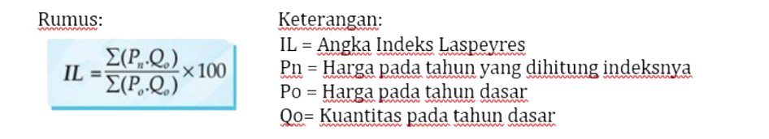
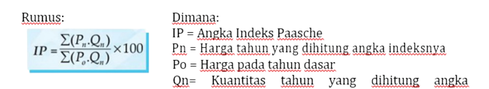

Inflasi
adalah Proses meningkatnya harga-harga secara umum dan terus-menerus dalam jangka waktu lama atau Keadaan yang menyatakan nilai uang menurun
Penyebab Inflasi
- Kenaikan permintaan melebihi penawaran (demand pull inflation) dimana inflasi terjadi disebabkan oleh naiknya permintaan total terhadap barang dan jasa.
- Kenaikan biaya produksi (cost push inflation) dimana inflasi yang terjadi karena meningkatnya biaya produksi, sehingga harga barang yang ditawarkan mengalami kenaikan.
- Meningkatnya jumlah uang yang beredar dalam masyarakat (money in circulation), artinya terdapat penambahan jumlah uang yang beredar, sehingga para produsen menaikkan harga barang.
- Berkurangnya jumlah barang di pasaran artinya jumlah barang yang ada dipasar atau jumlah penawaran barang mengalami penurunan, sehingga jumlahnya sedikit sedang permintaan akan barang tersebut banyak sehingga harga barang naik.
- Inflasi dari luar negeri (imported Inflation) artinya inflasi karena mengimpor barang dari luar negeri, sedangkan di luar negeri terjadi inflasi (kenaikan harga barang di luar negeriI, sehingga barang- barang impor mengalami kenaikan harga.)
- Inflasi dari dalam negeri (domestic Inflation), artinya Meningkatnya pengeluaran pemerintah atau terjadi defisit anggaran.
Jenis Inflasi berdasarkan lajunya
- inflasi lunak (wild inflation), inflasi yang kecepatannya kurang dari 5% per tahun.
- inflasi cepat (galloping inflation), inflasi yang kecepatannya 5% atau lebih per tahun
- inflasi meroket (sky rocketing inflation) atau hiperinflasi, yaitu inflasi yang kecepatannya lebih dari 10% per tahun.
Indeks Harga
Sebagai Pengukur Inflasi
Kenaikan harga berbagai komoditas di masyarakat secara umum diukur dari hasil pencatatan harga komoditas di berbagai kota di Indonesia. Tugas ini dilakukan oleh Badan Pusat Statistik (BPS). Perhitungan dilakukan setiap bulan dengan menggunakan angka indeks. Angka indeks adalah suatu angka relative yang dinyatakan dalam persentase
Metode Indeks Harga Agregatif Tidak Tertimbang
- Perhitungan indeks harga agregatif tidak tertimbang mudah dan sederhana sebab hanya menjumlahkan harga rata-rata untuk tahun yang dihitung lalu dibandingkan dengan jumlah harga pembanding (tahun dasar). Rumus perhitungan indeks harga agregatif tidak tertimbang:

Metode Indeks Harga Agregatif Sederhana
- Metode Indeks Harga Laspeyres
- Metode Indeks Harga Paasche


Iklan

Dibuat oleh Mikael Ernest Susanto IT3_24